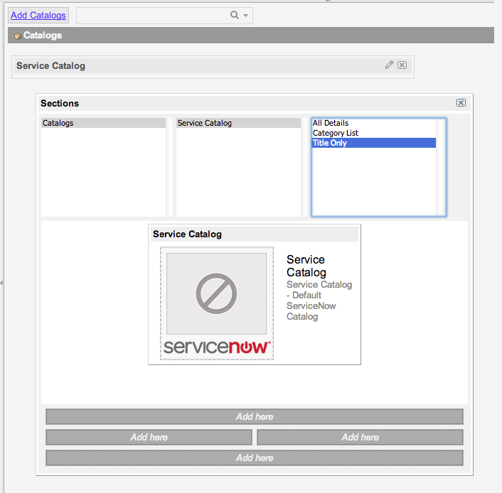
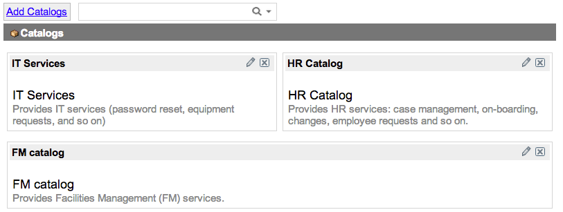

Managing Multiple Service Catalogs
| |
Note: This article applies to Fuji and earlier releases. For more current information, see Set Up Multiple Service Catalogs at http://docs.servicenow.com
The ServiceNow Wiki is no longer being updated. Visit http://docs.servicenow.com for the latest product documentation. |
Contents
1 Overview
Administrators and catalog administrators can manage multiple service catalogs to provide services to different teams within the organization, such as IT services, human resources, and facilities management.
End users can access multiple catalogs from a single homepage, can search across all catalogs, or can search directly within each catalog.
Multiple catalogs are available starting with the Eureka release.
2 Setting Up New Catalogs
A typical process for setting up a new service catalog is:
- Define catalog details and content such as categories and catalog items.
- Manage the catalog homepage details such as defining mobile layout.
- [Optional] Create a navigation module for the new catalog.
- [Optional] Add the catalog to the multi-catalogs home page.
3 Defining Catalog Details
- Navigate to Service Catalog > Catalog Definition > Maintain Catalogs.
- Select New.
- Fill in the fields, as appropriate (see table).
- Right-click the form header and select Save.
- Define catalog items and categories to include in the catalog.
- [Optional] Define additional portal pages for the catalog.
- [Optional] Manage sites if you are using a CMS system.
{kind=link}
| Field | Description |
|---|---|
| Title | The descriptive name for the catalog. |
| Application | The application scope for this catalog, |
| Active | A check box to indicate whether the catalog is available to end users. |
| Description | Information about the catalog, displayed on the multi-catalog homepage. |
| Background Color | The background color used for the catalog on the multi-catalog homepage. |
| Desktop image | The larger image to display with the catalog on the multi-catalog homepage. This is only shown if image display is included in the renderer selected, such as the default Title and Image renderer. |
| 'Catalog Home' page | A custom page to redirect to when the used clicks the catalog within a breadcrumb. |
| 'Continue shopping' page | The location to direct service catalog users to when they click the Continue Shopping button. This field is designed to reference a content page url suffix. |
3.1 Managing Catalog Items
Use the Catalog Items related list on the Catalog form to view and manage the items available in the catalog.
{kind=link}
To define a new catalog item for the catalog, click New and enter the details for the item.
3.1.1 Sharing Catalog Items Across Catalogs
You can also share a catalog item, allowing users to order that item from different catalogs. For example, you can share a Password Reset item across catalogs serving different teams.
To share a catalog item across several catalogs
- Navigate to Service Catalog Catalog Definition > Maintain Items
- Open the item to share.
- Select the additional catalogs for that item in the Catalogs field.
- Select Update.
{kind=link}
The shared item then appears in the Catalog Items related list for each catalog selected.
3.2 Managing Categories
The Categories related list defines the categories available within the catalog. Categories cannot be shared; each category can belong to only one catalog.
To define a new category, click New then enter the details for the category.
3.3 Managing Catalog Portal Pages
A catalog portal page provides a homepage for that catalog. You can create and manage multiple portal pages for a catalog, for example to create different catalog views for different user groups. Each portal page accesses the same catalog content, generally presenting that content in different ways.
Catalog portal page details include the owner, title and view to use for that page.
{kind=link}
| |
Note: The View field on a portal page is the value used when you refer to the homepage in a URL or module. When you upgrade to the Eureka release, this view value for the default service catalog portal page is automatically set to catalog_default. If you previously changed this value, you should manually reapply this change after upgrade. |
The Catalog Portal Pages related list shows portal pages available for that catalog. Each catalog has a default page, created automatically when the catalog is created, You can change which portal page is default for each catalog.
- Click New to create a new portal page.
- Click Edit to select an additional portal page for the catalog.
- Select a portal page to view and edit details for that page.
See Upgrading to Multiple Service Catalogs for more information about the Catalog Portal Page [sc_catalog_view_mtom] table.
See Homepage Administration for more information about managing portal pages.
3.3.1 Setting URLs For Catalog Modules
If you create a module for your catalog page, you can direct users to a specific catalog and view from this module.
In the Link Type section, select URL (from Arguments), then in the Arguments field, enter a URL of the form catalog_home.do?sysparm_catalog=<id of sc_catalog record>&sysparm_catalog_view=<view name of sys_portal_page>
For example: catalog_home.do?sysparm_catalog=742ce428d7211100f2d224837e61036d&sysparm_catalog_view=catalog_technical_catalog
{kind=link}
- If a URL has a valid sysparm_catalog parameter, but an invalid or missing sysparm_catalog_view parameter, the view with the default value from the corresponding Catalog Portal Page record is used.
- If a URL has a valid sysparm_catalog_view parameter, but an invalid or missing sysparm_catalog parameter, the corresponding Catalog Portal Page record is used to set the catalog.
Both cases decrease performance, so to ensure peak performance, ensure you define both parameters correctly.
| |
Note: If you make the default catalog inactive, please also deactivate the Catalog module, as otherwise users could still access the inactive catalog using that module. |
3.4 Managing Catalog Sites
If you are using the ServiceNow content management system as well as the service catalog, the Sites related list allows you to set which catalogs are supported within sites. This allows you to ensure that end users can always access an appropriate catalog. You can also view and edit values for your sites.
In the Sites related list, click Edit to add a site for this catalog.
To edit catalog site details,
- Click the reference icon (
 ) beside the site name.
) beside the site name.
- Enter values in the fields, as appropriate (see table).
- Click Update .
{kind=link}
| Field | Description |
|---|---|
| CMS homepage | The homepage for this site. |
| CMS search page | The location of the search page for the site. |
| CMS 'Continue Shopping' page | The location to direct end users to when they click the Continue Shopping button in that CMS site. This field is designed to reference a content page url suffix. |
| |
Note: These fields replace the system properties glide.sc.home.cms_page, glide.sc.search.cms_page, and glide.sc.continue.shopping.target. These properties are deprecated starting with the Eureka release. |
4 Customizing the Multi-Catalog Homepage
You can customize the multi-catalog homepage to provide end users with access to multiple catalogs from one homepage. This is similar to customizing the homepage for an individual catalog.
- Navigate to Service Catalog > Catalogs.
- Select Add Catalogs at the top of the page to add catalogs to this page.
- Select a catalog in the middle panel of the pop-up window.
- 
- Note: Only administrators can see catalogs that do not contain active categories or items.
- [Optional] Select a renderer from the right-hand panel, for example Title Only.
- Click Add here in the location where the catalog should appear on the homepage.
- [Optional] Repeat steps 3-5 to add more catalogs.
- Close the pop-up window to save the changes.
- The catalogs appear on the homepage.
- 
{kind=link}
{kind=link}
{kind=link}
You can modify the arrangement of catalogs within the homepage:
- To change a catalog's location, drag it to the appropriate place.
- To remove a catalog, click the X in the catalog title bar.
- To edit details for a catalog, click the pencil icon in the catalog title bar.
5 Enabling Access for Catalogs
You can enable read access to the catalogs by applying the rule read ACL on Catalog (sc_catalog) table. See Access Control Rules for more information.